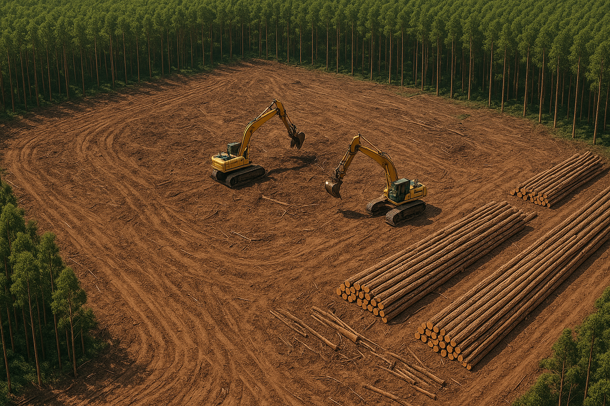

Monitoramento - Área 3
Data: 14/06/2025
Descrição: ALERTA (GRAVE)
A Área 3 apresenta alto risco ambiental. Foi identificado um desmatamento em larga escala com a presença de 4 máquinas de grande porte atuando de forma ilegal. A região devastada apresenta um formato quadrado, indicando planejamento na ação criminosa.
Atualização:
A equipe de fiscalização foi alertada às 10:40 do mesmo dia. As máquinas continuavam operando até 11:15, quando o drone perdeu o sinal devido à interferência eletromagnética. A denúncia foi enviada para o órgão ambiental estadual.

Fazer denúncia rápida Voltar para o menu principal